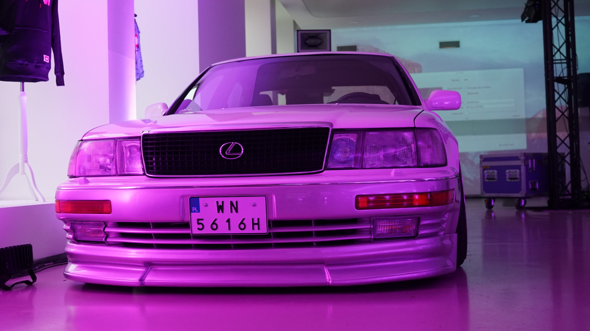

Aktualności i Nowości – Co piszczy w świecie tuningu?
Witaj w naszym motoryzacyjnym centrum dowodzenia! Świat tuningu nigdy nie zwalnia, a my trzymamy rękę na pulsie 24 godziny na dobę. W tej sekcji znajdziesz najświeższe wiadomości z globalnej sceny modyfikacji, relacje z najważniejszych zlotów oraz ekskluzywne nowinki prosto z naszego garażu przy ulicy 25 Czerwca 25 w Radomiu.
Niezależnie od tego, czy interesują Cię kosmiczne przyrosty mocy z nowych turbosprężarek, premiery customowych felg, czy po prostu chcesz wiedzieć, jakie auto właśnie budujemy – trafiłeś w idealne miejsce. Zjeżdżaj w dół i łap najnowsze artykuły!
🔥 Nowy potwór w naszym garażu na 25 Czerwca!
Oficjalnie ogłaszamy, że nasza flota przejażdżkowa właśnie się powiększyła! Do salonu w Radomiu wjechała prosto z Japonii kolejna ikona, która aktualnie przechodzi u nas kompletną metamorfozę. Rozbieramy silnik, zmieniamy układ wydechowy na w pełni przelotowy i montujemy gwintowane zawieszenie.
Chcesz zobaczyć proces budowy projektu od kuchni, zanim auto trafi do oficjalnego cennika przejażdżek? Wpadaj do nas na kawę lub śledź ten wpis – co tydzień wrzucamy tutaj aktualizacje z postępów prac i wykresy z hamowni!

Trendy z Tokio: Powrót ery lat 90. i nowoczesny chiptuning
Najnowsze doniesienia z japońskich warsztatów pokazują jasny trend: świat oszalał na punkcie retro-tuningu. Klasyczne linie nadwozia z lat 90. łączone są teraz z najnowocześniejszą technologią cyfrowego zarządzania silnikiem. Układy sterujące typu Standalone pozwalają wyciągnąć z legendarnych jednostek moce, o jakich konstruktorzy 30 lat temu mogli tylko pomarzyć.
Na naszym blogu rozkładamy te technologie na czynniki pierwsze. Podpowiadamy, jak przenieść japońskie rozwiązania na polskie drogi i jak bezpiecznie modyfikować komputery pokładowe w Waszych codziennych autach.
🏁 Kalendarz imprez: Gdzie ekipa Tuning Cars jedzie w tym sezonie?
Zobacz nasz oficjalny harmonogram:
Bądź na bieżąco, nie przegap żadnej premiery i pamiętaj – najlepsze nowości testujemy osobiście na radomskich ulicach!